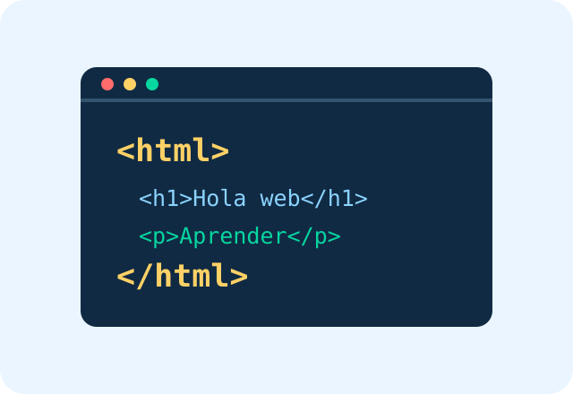

¿Qué es un ingeniero de software?
Un ingeniero de software es un profesional que se encarga de diseñar, desarrollar, probar y mantener programas y aplicaciones informáticas. Su objetivo es crear soluciones tecnológicas que respondan a las necesidades de las personas y las empresas, utilizando lenguajes de programación, herramientas digitales y metodologías de desarrollo para garantizar que el software sea eficiente, seguro y de buena calidad.
La Formacion para aprender a ser un ingeniero de software con lujo de detalles se encuentra abajo.
Pagina Universidad Manuela Beltran